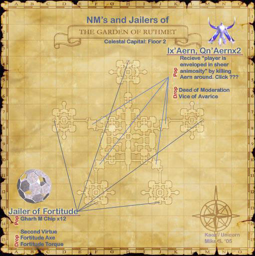

Level 75 reference · Zenith rules
|
Job: Dark Knight Notorious Monster |
|
Zone |
Level |
Drops |
Steal |
Spawns |
Notes |
|
4 |
L | ||||
|
HP = Detects Low HP; M = Detects Magic; Sc = Follows by Scent; T(S) = True-sight; T(H) = True-hearing JA = Detects job abilities; WS = Detects weaponskills; Z(D) = Asleep in Daytime; Z(N) = Asleep at Nighttime | |||||


Image source
Notes:
- Popped from a ??? in F-8, J-8, F-10 or J-10 (see map) on the ground floor of The Garden of Ru'Hmet by "sheer animosity." The ??? moves every 30 minutes, repopping in at most one minute's time after depopping. After depopping, it can repop with equal likelihood in all locations, including the same location it was already in making it seem as if it hasn't moved for an hour or longer.
- The ??? repops 15 minutes after the Ix'aern is killed.
- When you check the ??? when no one has animosity, it should say "You sense some unknown presence..."
- Once you find the ???, kill the local aerns until a player gets the message "PLAYER is enveloped in sheer animosity!". Only the recipient of the animosity will see the message. The message will display a few seconds after the Aw'aern is defeated.
- Checking the ??? when someone other than you has animosity yields a different message. "You sense an unknown presence, but it does not seem hostile.
- The player with animosity must check the ??? within 10 minutes to pop the NM along with two Qn'aern helpers (RNG).
- Ix'aern's hate is not reset if the ??? moves after it is ready to pop.
- The Qn'aern can be easily defeated while the Ix'aern is kited.
- The Qn'aern do not repop when the Ix'aern reraises.
- A balanced alliance of ~10 level 75 players should have little problem with this battle. Pull the mobs up into one of the corners of the room to ensure that repopped Aw'aern do not link.
- The NM will then spawn and attack the player who popped it, but will be passive if the people fighting it die.
- The NM will depop after idling for a few minutes.
- It can Reraise up to 25 times, and use Blood Weapon multiple times on each of its "lives." During Blood Weapon, Ix'aern's speed and strength increase considerably.
- It has resistance to all Enfeebling Magic. It is immune to Stun.
- When it dies, the Qn'aerns die along with it if they have not been killed already.
- Either a Deed of Moderation or a Vice of Avarice drops 100% of the time, but not both. This means that the Ix'aern will Reraise unless an item is dropped. No relation has been established between amount of Reraises and whether the Qn'aerns have been killed or not.
Adapted from Eden Wiki: Ix'aern (DRK) · Contributors and history · CC BY-SA 4.0. Revision 20599. Layout, links and optional background text adapted for Zenith.